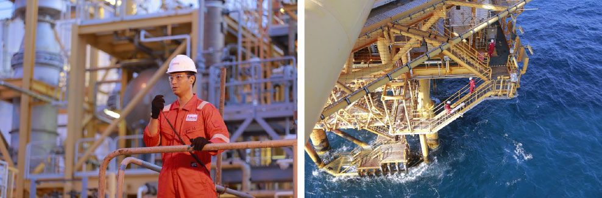
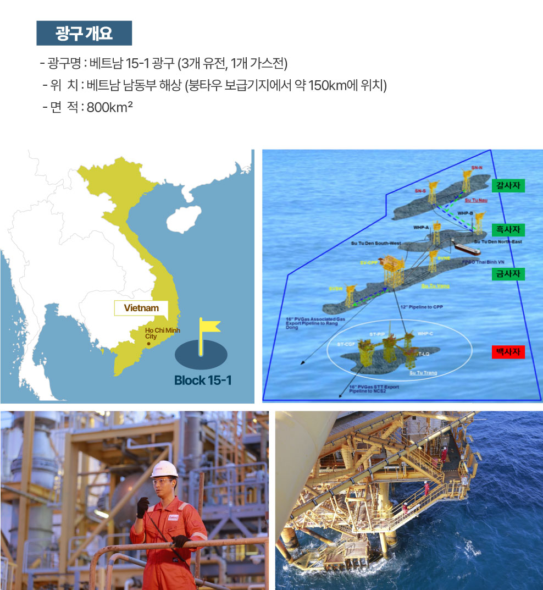
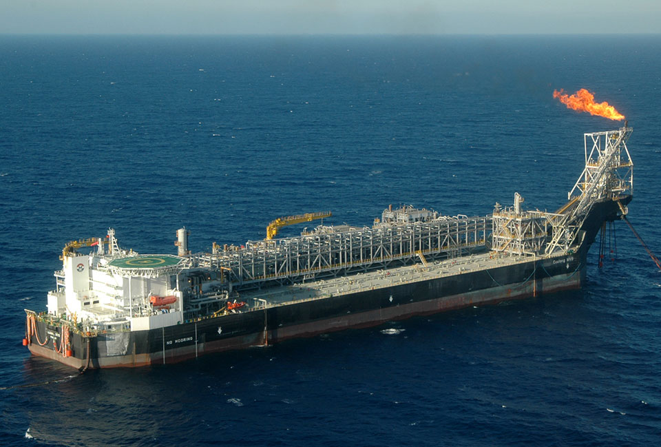
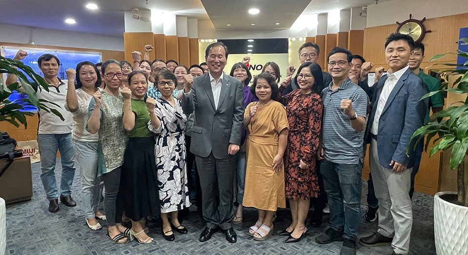

공사가 베트남 정부와 신규 광권 계약을 체결했다. 베트남 국영석유기업인 페트로베트남(PetroVietnam) 및 SK어스온 등과 함께, 베트남 남부 해상의 15-1광구에 대한 새로운 장기 계약을 체결한 것. 이 계약은 기존 광구 계약이 2025년 9월 종료되는 것을 앞두고 연장된 것으로, 신규 계약 기간은 2050년 9월까지 총 25년이다. 자원 안보를 강화하는 중요한 이정표를 세운 이번 계약의 내용과 의미를 살펴본다.
공사가 1998년부터 참여한 베트남 15-1광구, 신규 광권 지분 확보
지난 6월 20일, 베트남 하노이에서 공사가 신규 광권의 지분 확보에 성공한 베트남 15-1광구의 계약 서명식이 개최됐다. 이 서명식에는 베트남 부총리 겸 외교부 장관, 산업무역부 장관, 페트로베트남(PetroVietnam, 이하 PVN) 사장 등이 참석했으며, 한국 측에서는 공사 사장을 비롯해 주베트남 대사 등이 함께 자리했다.
 한국석유공사 김동섭 사장(앞줄 오른쪽에서 두번째)이 20일 베트남
하노이에서 15-1광구 신규 광권 계약 서명식에 참석하고 있다.
한국석유공사 김동섭 사장(앞줄 오른쪽에서 두번째)이 20일 베트남
하노이에서 15-1광구 신규 광권 계약 서명식에 참석하고 있다.
전체기준 누적 원유 4억 3천만 배럴 생산, 공사 몫 약 14억 불 거둬
베트남 15-1광구는, 공사가 1998년 사업에 참여해 2000년 탐사에 성공했으며 2003년 흑사자 유전을 시작으로 2024년까지 전체기준 누적 원유 4억 3천만 배럴을 생산하며 지금까지 공사몫으로 약 14억 불의 수익을 거두게 한 주역이다. 이번 신규 광권 계약은, 15-1광구의 기존 계약을 25년 연장한 것으로, 향후 베트남 국내 시장에 하루 1억 2천 5백만 입방피트의 천연가스를 공급할 수 있고, 공사는 약 2억 불 수준의 순현금흐름을 창출할 수 있을 것으로 기대하고 있다.


베트남 15-1광구 위치도베트남 15-1광구, 공사가 최초 탐사부터 참여해 구조 발견

베트남 15-1광구는 공사가 최초 탐사 단계부터 적극적으로 참여하여
원유 구조를 발견했다. 탐사 초기 탄성파 자료 취득 및 전산처리,
구조해석과 유망구조 도출을 주도적으로 리드하였으며, 타 참여사와
치열한 논의를 통해 현재 구조에 탐사시추를 하여 원유를 발견하는
쾌거를 이루었다. 공사는 탐사 성공 이후 투자비를 생산 개시 약 1년
2개월 만에 전액 회수할 수 있었으며, 탐사-개발-생산에 이르기까지의
전 과정을 성공적으로 수행한 공사의 대표적인 사업적 사례로 볼 수
있다.
공사는 1998년 9월 베트남 정부와 석유개발계약을 체결한 후,
2000년에는 Su Tu Den 구조에서 원유를 발견하고 2003년 10월에
본격적인 생산을 시작했다. 이후 Su Tu Vang(2001년 10월), Su Tu
Trang(2003년 11월), Su Tu Nau(2005년 9월) 구조에서 연이어 성공적인
탐사를 거쳐 생산이 개시되었으며,
현재는 네 개 구조에서 일일 32,000배럴 (원유 25천배럴, 가스
7천배럴)의 원유와 가스를 생산하고 있다.
현재, 베트남 15-1광구는 우리나라를 비롯해 베트남, 프랑스 등 다국적
기업의 다양한 분야 전문가들의 협업을 통해 의사를 결정하고, 광구를
운영하고 있다. 다양한 국가에서 축적된 지식과 기술 역량을 서로
교류하며, 각 사의 강점을 활용하여 효율적인 광구 운영 및 생산량
증진에 많은 도움을 주고 있다.
 한국석유공사 김동섭 사장(오른쪽에서 두번째)이 20일 베트남
하노이에서 15-1광구 신규 광권 계약 서명식에 참석하고 있다.
한국석유공사 김동섭 사장(오른쪽에서 두번째)이 20일 베트남
하노이에서 15-1광구 신규 광권 계약 서명식에 참석하고 있다.
자원외교, 에너지 안보, 에너지 외교의 지평 열어
베트남 15-1광구가 공사 전체 석유개발사업에 모범사례로 유지되고
있는 만큼, 이번 신규 광권의 확보는 단순한 경제적 성과를 넘어서
양국 정부 간 신뢰 강화 및 전략적 협력 확대라는 점에서도 큰 의미를
지닌다. 아시아 내 핵심 파트너국인 베트남과 협력함으로써 자원외교의
실효성을 확보하고, 베트남을 에너지 안보의 전략적인 교두보로
활용하는 한편 동남아 지역 에너지 외교의 지평을 넓히는 계기가 될
것으로 기대하고 있다.
이제 다시 베트남 15-1광구 내에서 신규 유망 구조의 탐사와 대규모
가스전의 추가 개발을 기대하고 있는 한국석유공사. 우리나라의 자원
이정표를 베트남에 다시 한번 세운 만큼, 베트남 사업에서 안정적으로
성과를 거두고, 반가운 낭보가 계속해서 들려오길 기대해 본다.

Petrovietnam 당 위원장 겸 이사회 의장 레 마잉 훙(Lê Mạnh Hùng)과 KNOC 김동섭 사장, 양측 대표단이 회의에 참석했다.